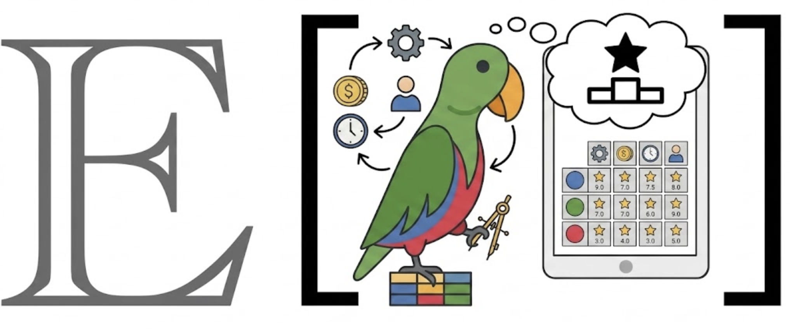
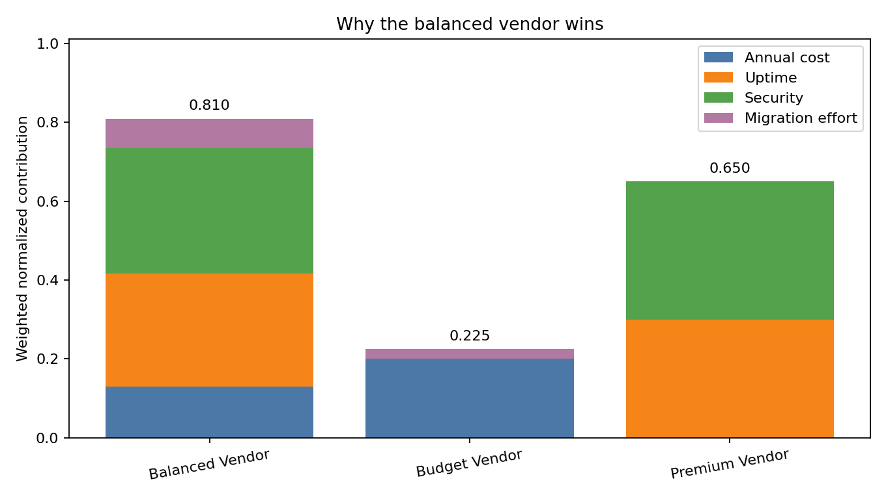
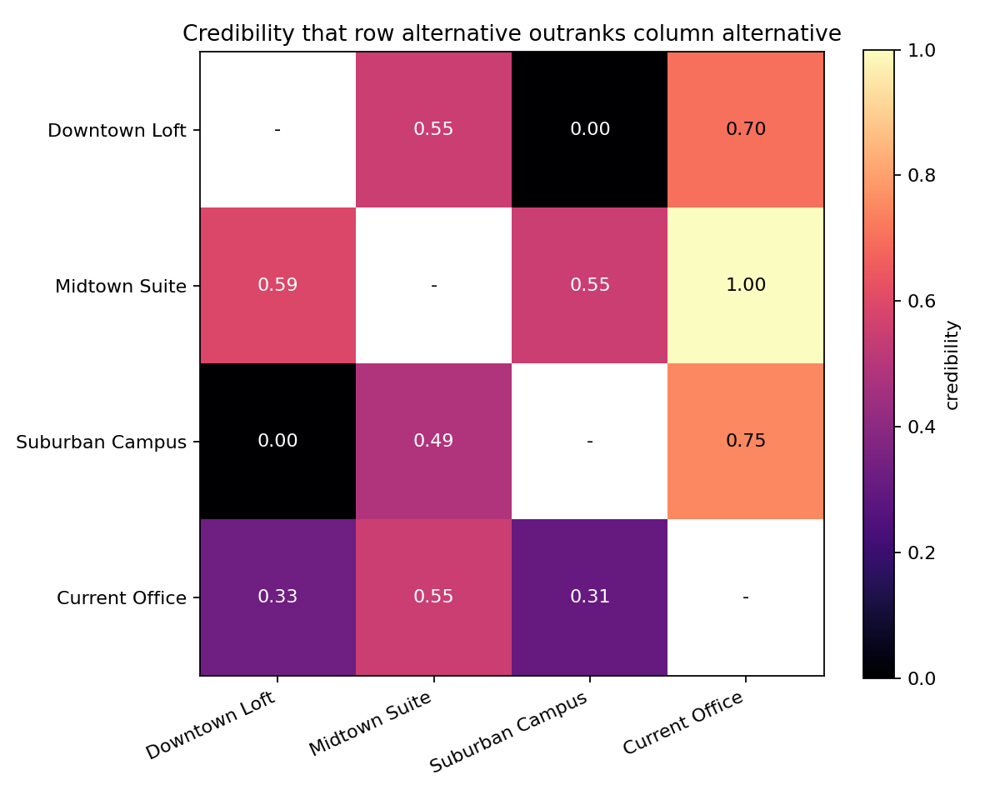

Make tradeoffs explicit without pretending every choice has one obvious winner.
MCDA turns alternatives, criteria, stakeholder judgments, and factual evidence into an auditable comparison using weighted-sum or ELECTRE III analysis.

01 · What MCDA is for
Use MCDA when several alternatives must be judged on criteria measured in different units and important to different stakeholders. It preserves the inputs behind a recommendation: who supplied each judgment, how inputs were aggregated, which analysis is primary, and which runs are robustness evidence.
Clear tradeoffs
Weighted sum normalizes performance and shows each criterion's contribution to a total score.
Difficult tradeoffs
ELECTRE III represents indifference, preference, vetoes, and cases where alternatives remain incomparable.
Real baselines
A status quo can be stored as a reference without becoming an eligible recommendation.
Auditable evidence
Jobs, Results, manifests, raw observations, and analysis outputs remain available for inspection.
02 · Structure the decision
Create the project, then define participants, alternatives, and criteria. Factual values can be recorded directly. Criteria needing expert or synthetic judgment can be selected for an EDSL assessment.
mcda init vendor_selection
mcda -C vendor_selection participant add operations "Operations"
mcda -C vendor_selection participant add finance "Finance"
mcda -C vendor_selection alt add northstar "Northstar" --type candidate
mcda -C vendor_selection alt add incumbent "Current vendor" --type reference
mcda -C vendor_selection crit add cost "Annual cost" --direction min --unit USD
mcda -C vendor_selection crit add reliability "Reliability" --direction max --unit scoreWeights remain explicit decision inputs. The assessment estimates how alternatives perform; it does not silently infer what stakeholders should value.
03 · Generate an EDSL Jobs package
assessment build converts participants into EDSL Agents, alternatives into Scenarios, and selected leaf criteria into numerical questions. It serializes that design as jobs.ep and writes a manifest containing the expected participant × alternative × criterion grid.
mcda -C vendor_selection assessment build --id expert_round \
--criteria reliability
ep inspect vendor_selection/.mcda/assessments/expert_round/jobs.ep
ep jobs cost vendor_selection/.mcda/assessments/expert_round/jobs.ep
ep run vendor_selection/.mcda/assessments/expert_round/jobs.ep \
--output vendor_selection/.mcda/assessments/expert_round/results.epJobs object. It does not write Python, choose a model, access credentials, or make model calls.04 · Validate before changing project state
Ingestion checks provenance, numeric answers, duplicates, and complete coverage against the saved manifest before writing performance observations. By default, one missing or invalid cell causes the import to fail without writing anything.
mcda -C vendor_selection assessment ingest expert_round \
--results vendor_selection/.mcda/assessments/expert_round/results.epjobs.ep records what was asked and of whom; results.ep records answers and model provenance. Use --allow-partial only when an incomplete evidence set is intentional.05 · Choose the analysis that matches the decision
| Method | Use it when | What it returns |
|---|---|---|
| Weighted sum | A compensatory score is defensible and readers need a clear total ranking. | Normalized performance, weighted contributions, scores, and ranking. |
| ELECTRE III | Small differences may be immaterial, poor performance can veto an option, or incomparability is meaningful. | Concordance, credibility, pairwise relations, distillation, and candidate ranking. |
mcda -C vendor_selection analyze run --method weighted-sum --role primary
mcda -C vendor_selection analyze run --method electre-iii --role alternative-method06 · Read the result, not just the winner
The worked vendor example shows the compensatory view: the score is decomposed so a recommendation can be traced back to criterion-level evidence.

The office-lease example demonstrates why a total score can overstate certainty. ELECTRE III preserves directional outranking and can report that no candidate cleanly dominates the others.

07 · Keep robustness separate from the primary answer
A pooled analysis should be selected as canonical. Participant-specific and alternative-method runs remain evidence about sensitivity; a newer timestamp does not silently replace the primary result.
mcda -C vendor_selection analyze run --method weighted-sum --role primary
mcda -C vendor_selection analyze run --method weighted-sum \
--participant finance --role robustness
mcda -C vendor_selection analyze primary set <analysis-id>08 · Hand authoritative evidence to the report writer
MCDA owns the decision evidence, not the final prose. The report guide identifies the canonical analysis, coverage, provenance, references, diagnostics, warnings, and readiness blockers. The calling research agent uses that evidence to author the reader-facing report.
mcda -C vendor_selection report guide
mcda -C vendor_selection report template
# The calling agent writes writeup/report.mdQuick command sequence
- Run
mcda -C <project> guideand follow itsnext_steps. - Define alternatives, criteria, participants, weights, and known performance.
- Build
jobs.eponly for criteria needing elicitation. - Inspect and price the package, then execute it externally with
ep run. - Ingest the complete
results.eppackage. - Run and explicitly identify the primary analysis.
- Use
report guideto hand evidence to the narrative-writing agent.
The execution boundary
MCDA performs deterministic project management, validation, aggregation, weighted-sum analysis, and ELECTRE III analysis locally. EDSL performs model execution only after an agent or user explicitly runs the generated package.
MCDA: design → jobs.ep + manifest
EDSL: inspect → estimate → run → results.ep
MCDA: validate → ingest → analyze → evidence handoff
Agent: interpret → writeup/report.mdInstall and contribute
git clone https://github.com/expectedparrot/mcda.git
cd mcda
python -m pip install -e '.[edsl]'
mcda --help
pytest -qMCDA requires Python 3.11 or newer. Run mcda -C <project> guide and mcda -C <project> next as the state-aware source of truth.